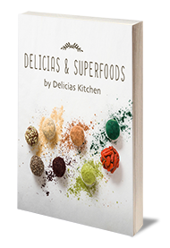
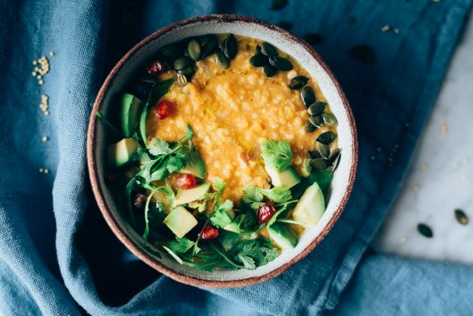

Sobre mí
Hola, bienvenid@ a mi blog, un espacio donde quiero compartir mis recetas vegetarianas y veganas favoritas...
Hola, bienvenid@ a mi blog, un espacio donde quiero compartir mis recetas vegetarianas y veganas favoritas...

Y consigue GRATIS mi eBook con 10 recetas exclusivas con superalimentos.
Una salsa vegana para la pasta, tan sabrosa y cremosa que resulta irresistible! Está elaborada con coliflor y con otros ingredientes vegetales, que la convierten en…
Galletitas para San Valentín? Estas galletas ricas y crujientes, elaboradas con avena y con un rico sabor a rosa y lima son perfectas para celebrarlo!

Un buen plato de mijo cremoso con lentejas y hortalizas es todo lo que necesitas para templar el cuerpo este invierno! Delicioso y fácil!
Estos calabacines rellenos de arroz negro y calabaza que te propongo hoy, son la última receta que publico en el blog en…